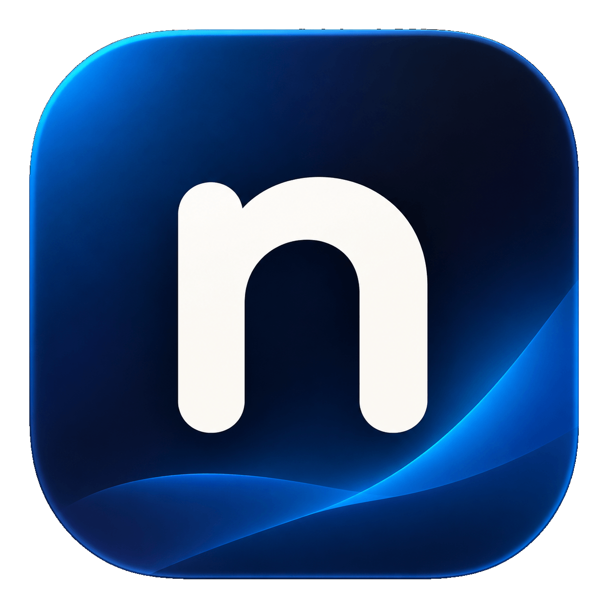

Tu espacio, a tu manera.
Sesiones con nombre y color, paneles divididos y varias ventanas. Cada shell conserva su propio historial.

nia_ English Explorar la betaNATIVO PARA MACOS · EN BETA
Un lugar para tus proyectos, tus shells y todo lo que pasa entre un comando y el siguiente. Hecho para Mac, con memoria de lo que estabas haciendo.
~/projects/mi-proyecto main
❯ git status --short
M src/app.swift
M README.md
❯ git diff --stat
src/app.swift | 18 ++++++++++
README.md | 4 ++
2 files changed, 12 insertions(+)
# Cambios preparados. Contexto a mano.
❯
MENOS VOLVER A EMPEZAR
Cada proyecto tiene su ritmo. nia_ reúne terminal, historial y contexto para que puedas orientarte al volver. Nia Sync empieza a llevar ese estado a otros Macs mediante versiones cifradas.
Sesiones con nombre y color, paneles divididos y varias ventanas. Cada shell conserva su propio historial.
Salida guardada en disco, historial de comandos y retorno al contexto de la sesión. Encuentra, copia e inserta sin volver a ejecutar.
Pide un comando en lenguaje natural. Elige un modelo local o un proveedor externo y revisa la propuesta antes de usarla.
EXPLORA NIA_
Funciones construidas, capacidades experimentales y próximos pasos, con su estado a la vista. Esta página describe la línea de desarrollo; una release anterior puede no incluir todas las novedades.
En beta
Interfaz SwiftUI y AppKit, renderizado Metal y un motor de terminal en Rust.
macOS 14+. Colores ANSI, capacidades de 256 colores y truecolor, Unicode y rejilla adaptable. Algunas TUIs, emoji y casos de reflow siguen pendientes de validación completa.
En beta
Nombres editables, colores, búsqueda, orden por arrastre e historial independiente.
Identificadores estables, sesiones guardadas y atajos ⌘1–⌘9. Renombrar no cambia el historial ni la identidad de la sesión.
Experimental
Dos terminales lado a lado o apilados, y ventanas independientes con ⌘N.
Cada ventana recuerda su distribución. Dentro de un proceso, una sesión se edita en una sola ventana para evitar redimensionados incompatibles. La coordinación entre procesos independientes y la restauración de todas las ventanas siguen incompletas.
En beta
Recupera sesiones, directorio, historial y un entorno Python que siga instalado.
La captura de directorio y venv se apoya en Zsh. Se recrea la shell; no se recuperan procesos locales terminados ni se instalan entornos que falten.
En beta
Salida ANSI persistente, scrollback configurable e índice de historial.
El scroll conserva colores y filas hasta el límite de 1.000–100.000 líneas configurado. La salida completa permanece en disco; el índice textual no reconstruye una TUI píxel a píxel. Los registros grandes pueden ralentizar la apertura.
En beta
Busca comandos, consulta duración y resultado, y vuelve a su salida.
En Zsh local: directorio, fecha, estado de salida y contador de repeticiones. Consulta los 200 comandos más recientes; copiar o insertar no ejecuta el comando. Los comandos antiguos sin marca no admiten salto a su salida.
En beta
Copia al seleccionar, selección de palabras, líneas o rectángulos y rutas desde Finder.
⌘C/⌘V, arrastrar archivos con rutas escapadas y doble Escape para limpiar la línea con bindings tipo Emacs. El aviso nativo de copia forma parte de la nueva línea de desarrollo.
En beta
Abre URLs con ⌘clic e inserta identificadores o contraseñas desde el menú contextual.
Enlaces HTTP/HTTPS, copiar enlace y generadores de UUID, contraseña e identificadores heredados. Insertar texto no envía Intro. Algunos enlaces partidos entre líneas aún no se reconocen.
En beta
Confirmación opcional antes de cerrar una sesión con exit o logout.
Intercepta esas órdenes exactas en el prompt Zsh local. Cancelar mantiene la shell abierta y confirmar conserva su historial. No cubre otras shells, SSH o salidas internas de programas.
En beta
Tema claro, oscuro o del sistema; tamaño de letra y cursor configurables.
Interfaz y preferencias en español e inglés. Opacidad del terminal disponible de forma experimental. Los cambios de apariencia no alteran tus sesiones.
En beta
Escribe ? en Zsh local y recibe una propuesta editable para tu terminal.
Puedes insertar tras revisar. La ejecución automática es opcional y está limitada por un validador de patrones; no es un sandbox. La integración de ? no está disponible en Bash, Fish o SSH remoto.
En beta
Modelo interno opcional, servidores locales y proveedores externos.
GGUF con llama.cpp bajo demanda; endpoints compatibles como Ollama, vLLM o LM Studio; OpenAI, Anthropic, Gemini y OpenRouter. Claves de proveedores en el llavero. El modelo interno requiere una descarga adicional.
Experimental
Recuerda órdenes explícitas de resume de Claude, Codex y Gemini.
Necesita el ID en el comando original, la CLI y los datos de conversación en el Mac. Descubrir automáticamente el ID de una conversación iniciada sin resume sigue pendiente.
Experimental
SSH + tmux para volver a una shell que vive en otro equipo.
Utiliza tu configuración SSH y verifica la identidad del host. La sesión tmux se conserva en el servidor mientras siga activo. Incluye reconexión manual; no sincroniza el workspace.
Experimental
Snapshots con restic y recuperación manual de estado e historial.
Herramientas nia-backup y nia-handoff para repositorios locales, SFTP o S3. La configuración y ejecución desde la interfaz nativa, la programación y el flujo de restauración guiado están pendientes.
En beta
JetBrains Mono, Fira Code, Cascadia Code, IBM Plex Mono y Source Code Pro.
Descargas opcionales con licencia, verificadas y registradas solo para nia_. Selección sin reiniciar. El renderer por celdas no activa ligaduras entre caracteres. Implementado en la beta.
En beta
Barra opcional con consumo semanal, reinicios y tokens con su ámbito indicado.
Codex consulta su CLI local. Claude necesita conectar el adaptador de su línea de estado y emitir una respuesta. Los datos dependen del plan; una cuota ausente no se muestra como cero. Implementado en desarrollo.
En beta
Comprobación de versiones, canal estable o preliminar y descarga e instalación confirmadas.
Comprueba integridad y compatibilidad antes de sustituir la app. Usa la sesión de gh si el repositorio necesita acceso privado. La distribución sigue en beta, sin notarización Apple.
En la hoja de ruta
Llevar los comandos configurables del prototipo a la interfaz nativa.
Existe un formato actions.toml y código histórico. Falta conectarlo a SwiftUI con selección de sesión y confirmación. No está disponible actualmente como una función de la app nativa.
En beta
Versiones de tus sesiones entre Macs mediante iCloud Drive o Google Drive.
Beta: Google Drive directo con autorización en el navegador o carpeta iCloud, claves en Keychain, selección explícita, bloques cifrados incrementales, versiones concurrentes y botón para continuar. No sobrescribe sesiones abiertas. Procesos, proyectos, conversaciones internas de agentes, layouts y borrados quedan fuera. Pendiente prueba física en dos Macs.
En la hoja de ruta
Separar la vida de los procesos de la ventana del terminal.
Requiere un servicio residente de PTY y un protocolo de reconexión. No está implementado. No promete migrar la memoria de un proceso ni recuperarlo después de reiniciar el equipo.
En la hoja de ruta
Backup desde la app, políticas de historial y mayor cobertura de shells y accesibilidad.
También quedan la detección automática de agentes, pruebas de recuperación entre Macs, coordinación entre procesos, notarización y validación más amplia del terminal. Sin fechas comprometidas.
DE UN MAC A OTRO
Hay tres necesidades diferentes detrás de esa idea: reconectar a un proceso remoto, recuperar una copia y compartir versiones de sesiones. Nia Sync ya está implementado como beta.
Hoy · experimental
SSH + tmux permite conectarte desde otro Mac a una shell que sigue ejecutándose en el equipo remoto. Ese equipo debe permanecer disponible. El proceso no se mueve entre ordenadores.
Hoy · manual
Las copias cifradas y el traspaso manual permiten recuperar metadatos e historial en otro Mac. Proyectos, rutas y entornos necesitan existir allí. No se transfieren procesos vivos.
Nia Sync · beta
Conecta Google Drive directamente o elige una carpeta de iCloud Drive, conecta tus Macs con la misma clave y comparte sesiones seleccionadas. Historial cifrado incremental y versiones paralelas conservadas; continúa explícitamente desde el botón de nube.
UNA BETA EN MOVIMIENTO
La dirección está clara. El orden puede cambiar con el uso real y las pruebas; estas prioridades no son fechas de entrega.
Estado técnico y pendientesAfinar scroll, reflow, foco, aplicaciones a pantalla completa y restauración con varias ventanas. Medir rendimiento y ampliar las comprobaciones de accesibilidad.
Configurar copias y restauraciones desde la app, programarlas y comprobar la recuperación en otro Mac. Mejorar retención y control de lo que se guarda.
Validar la entrega cloud en dos Macs físicos, añadir retención y borrados, compartir layouts y estudiar la transferencia de conversaciones de agentes. La base cifrada incremental ya está implementada.
Explorar un servicio de sesiones persistentes, detectar automáticamente las conversaciones de agentes y mejorar la reconexión. Extender la integración de shell más allá de Zsh.
La beta incluye Nia Sync: versiones cifradas mediante Google Drive directo o una carpeta iCloud Drive, con sesiones elegidas por ti y revisión cada minuto mientras nia_ está abierta. Continuar en otro Mac es explícito. No mueve procesos, proyectos, ventanas ni los archivos internos de conversación de agentes; falta validación real con dos Macs.
Las shells locales se recrean al abrir la app: se recupera el estado guardado, no la memoria del proceso. Una sesión remota tmux puede seguir viva en su host mientras ese host continúe funcionando.
No. La asistencia es opcional. Puedes elegir ejecución local o un proveedor externo; este último recibe las consultas que le envíes. La propuesta de un modelo puede ser incorrecta y debe revisarse.
En tu Mac. Si activas Nia Sync, las sesiones seleccionadas se comparten cifradas en tu carpeta cloud. Las copias con restic también se cifran. El historial puede contener información sensible y todavía no hay una política completa de retención y redacción.
macOS 14 o posterior. Consulta las releases disponibles y sus requisitos. El acceso al repositorio y las descargas puede estar limitado durante esta fase; la línea de desarrollo puede ir por delante de la última release. La distribución aún no está notarizada por Apple.
Comparte errores reproducibles, propuestas y experiencias de uso en GitHub cuando tengas acceso al repositorio. El código usa MPL-2.0; las dependencias y modelos tienen sus propias licencias.
CONSTRUIDO PARA SEGUIR
nia_ está en beta y seguirá evolucionando. Explora lo que hay, conoce lo que falta y acompaña el desarrollo.